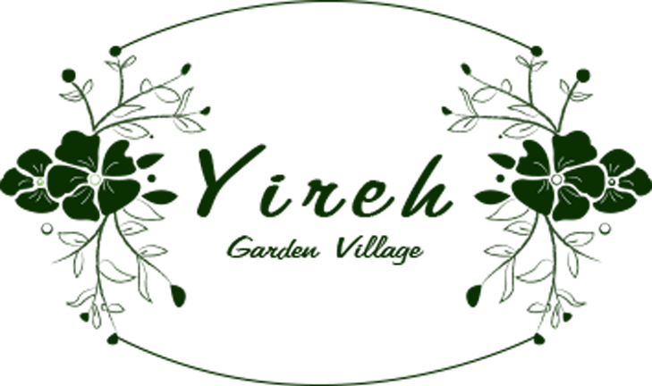
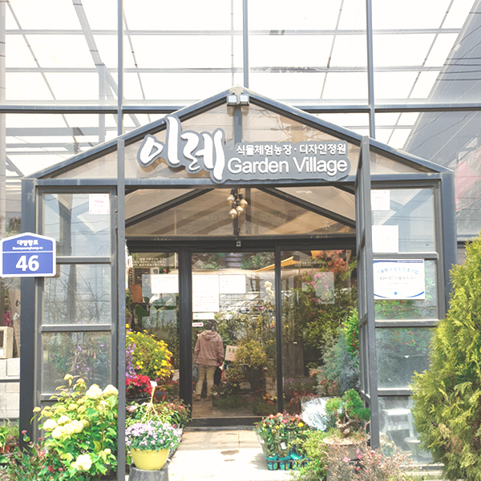
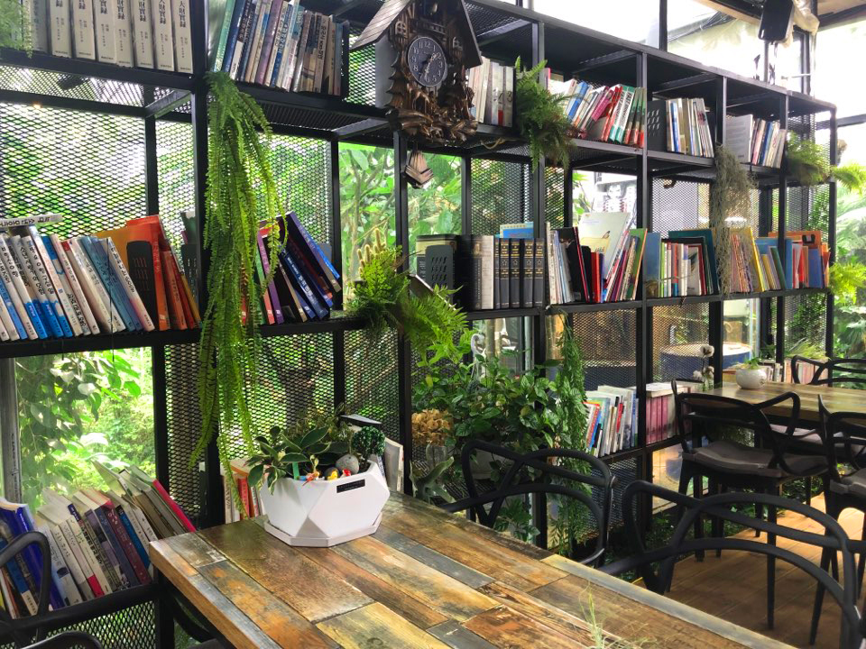

이레가든 메인
이레가든 소개
이레가든 이용안내
이레가든 갤러리
이레가든 오시는길

사람
과
식물
들이 함께 살아가는 공간
이레가든 빌리지

이레가든 이용안내
Cafe the 조은
주변에 많은 꽃들과 어우러져있는
카페 휴식공간 입니다.
도서 & 휴식공간
많은 책들과 꽃이 배치되어 있어
쉬기 좋은 공간입니다.
벤치 & 작은호수
이레가든 곳곳에 쉴 수 있는 벤치와
그 맞은 편에는 작은호수가 있습니다.
꽃과 장식들
수많은 꽃들 사이에 귀엽고 예쁜
장식들이 배치되어 있습니다.

이레가든 갤러리
이레가든 오시는길
이레가든 주소
경기도 김포시 양촌읍 대명항로 46 이레가든 빌리지
이레가든 운영시간
평일 : 09:00 ~ 19:00
토요일 : 09:00 ~ 20:00
대중교통
60-3, 102, 공영쇄암
가오대입구 하차 도보 1분
60-2, 70, 700-1
가오대입구 하차 도보 1분
TEL : 080-324-1000 | E-MAIL : chounflower@naver.com